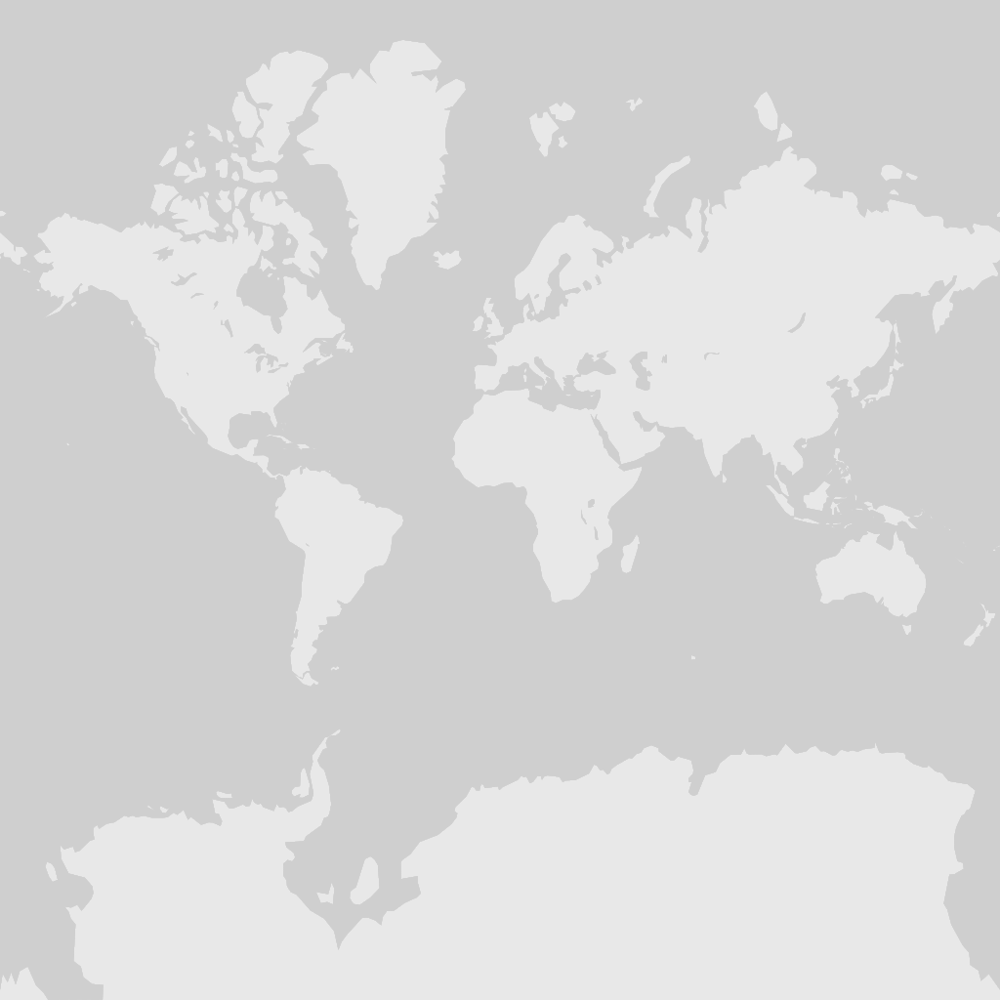

Cernícalo Primilla
Falco naumanni LC
Falconidae
Ya publicada: 2026 · 06 · 24
© Bengt Nyman / iNaturalist (CC BY)
Sittidae · Passeriformes
Sitta europaea LC
El Trepador Azul (Sitta europaea) es el miembro más representativo de su familia y un verdadero maestro de la verticalidad en los bosques del Viejo Mundo. Su área de distribución es asombrosamente amplia, extendiéndose desde las Islas Británicas, Escandinavia y Marruecos hasta Kamchatka, Japón y Taiwán. Con una silueta compacta de unos 14 centímetros de longitud, cola corta y un pico fuerte en forma de cincel, este pájaro destaca por un comportamiento acrobático formidable: es capaz de descender rutinariamente de cabeza por los troncos de los árboles. Esta destreza es posible gracias a la notable solidez de sus patas y garras, que le permiten aferrarse a la corteza para buscar alimento desde ángulos inaccesibles para otras aves.
A lo largo de su inmenso territorio se reconocen unas 22 subespecies, cuyo color ventral oscila desde el blanco puro o amarillento hasta tonos canela o rojizos. En el pasado, otras especies como el Trepador Siberiano (Sitta arctica), el Trepador de Cachemira (Sitta cashmirensis) o el Trepador Ventricastaño (Sitta cinnamoventris) se consideraron integrantes del Trepador Azul. El dimorfismo sexual es bastante sutil; las hembras suelen presentar un plumaje ligeramente más pálido y una franja ocular de un tono pardo menos marcado que el negro intenso de los machos, manteniendo ambos sexos esa estampa ágil que los caracteriza.
Identificación en campo

 © OpenStreetMap · GBIF
© OpenStreetMap · GBIF
Falco naumanni LC
Falconidae
Ya publicada: 2026 · 06 · 24
Asio otus LC
Strigidae

Cacicus koepckeae NT
Icteridae

Burhinus oedicnemus LC
Burhinidae

Dryocopus martius LC
Picidae

Sterna paradisaea LC
Laridae

Netta rufina LC
Anatidae

Alcedo atthis LC
Alcedinidae

Sturnus vulgaris LC
Sturnidae
Ya publicada: 2026 · 04 · 18
Dryobates minor LC
Picidae

Podiceps cristatus LC
Podicipedidae

Erithacus rubecula LC
Muscicapidae
Ya publicada: 2026 · 05 · 17